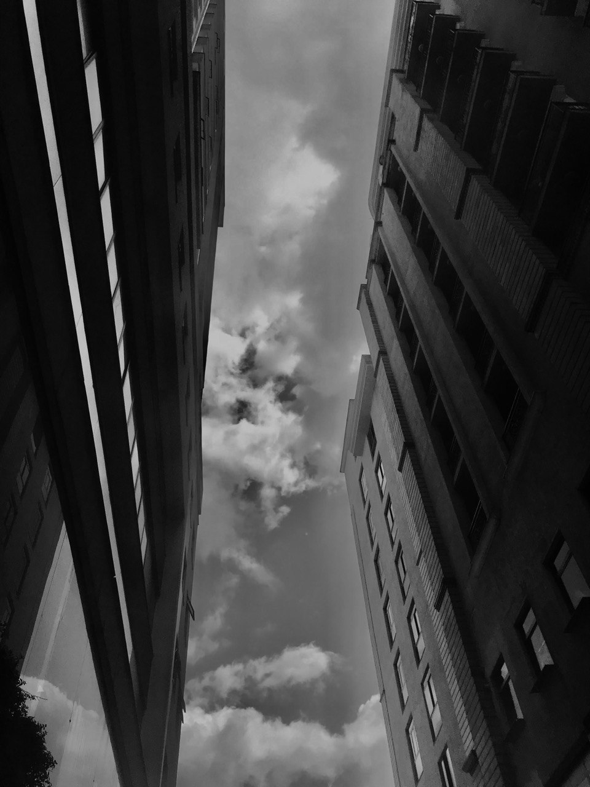
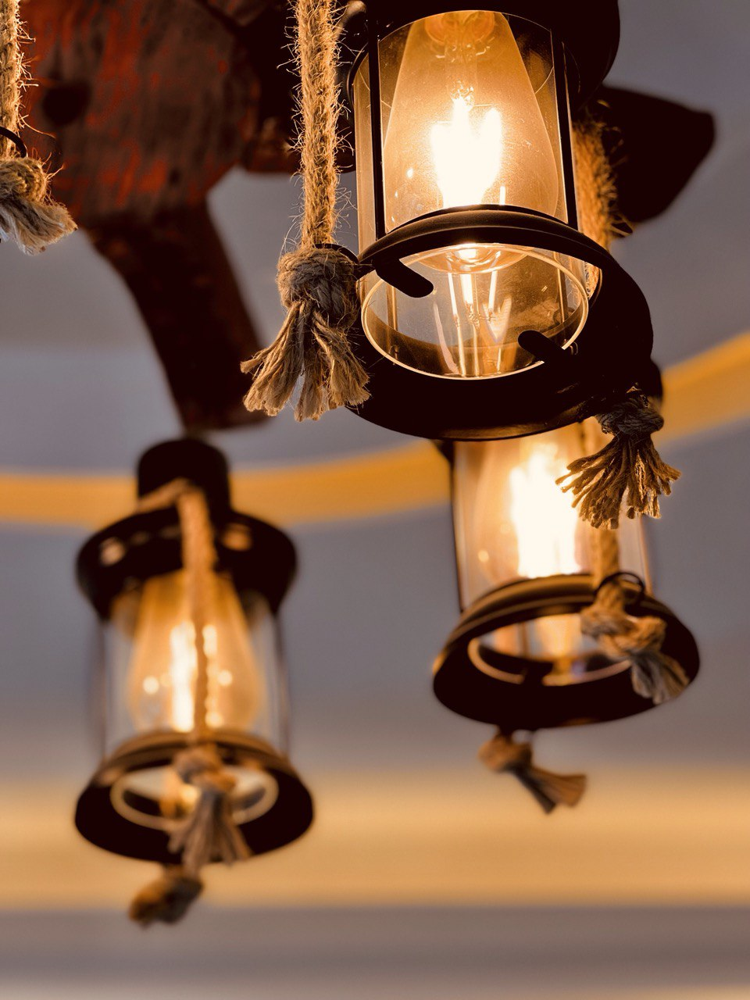
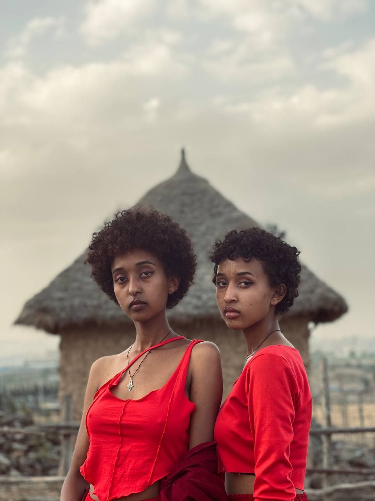
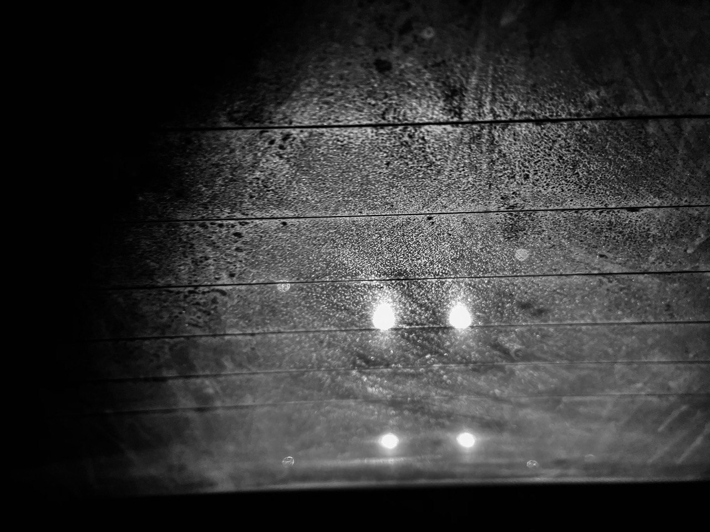
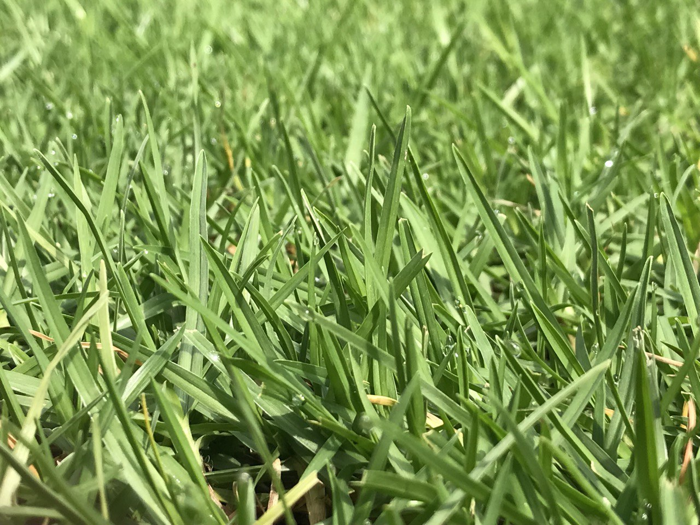
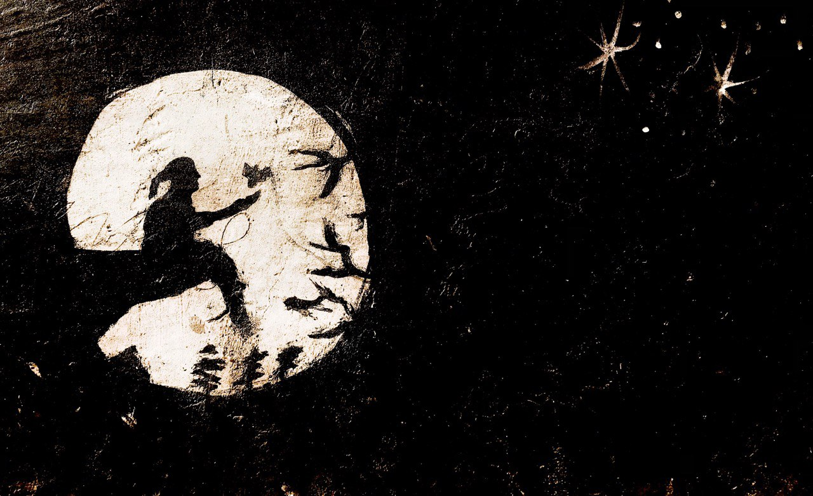
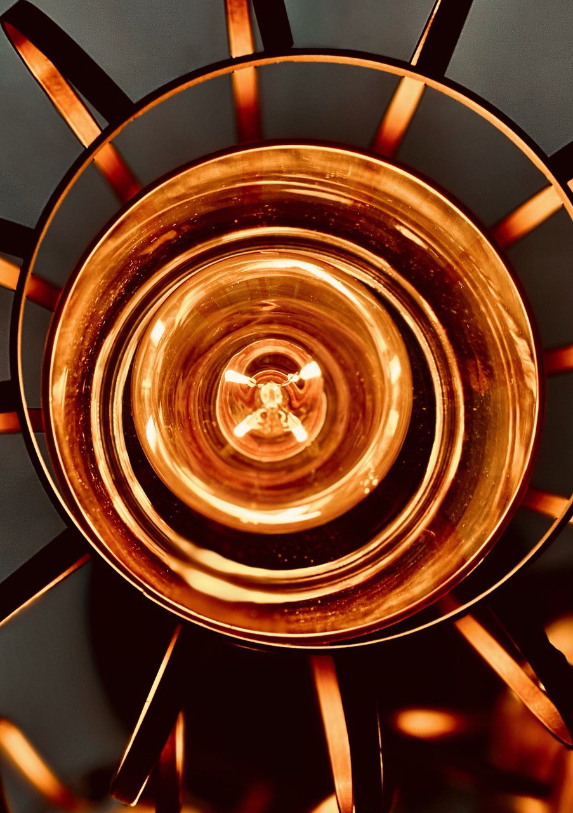
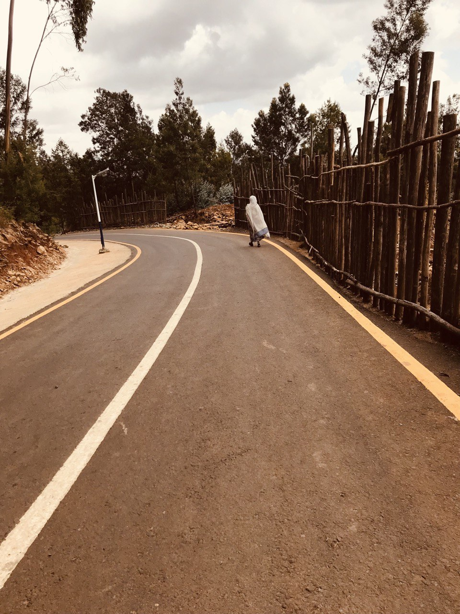
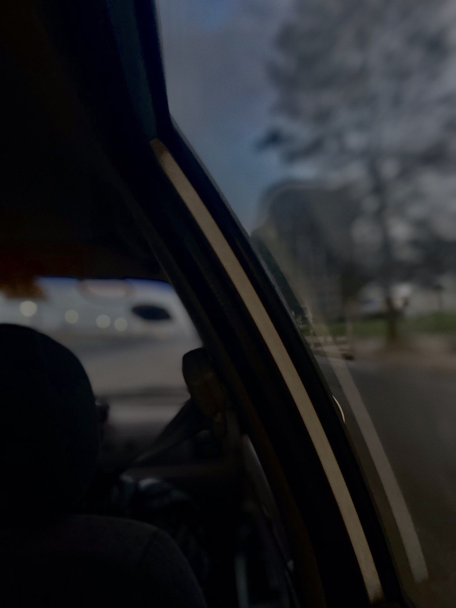

This image titled 'Motor Head'.The image is based on a band.The image was shot on 22 AUG 2022
this photo is inspired by the Noir movies of old. its cut up appearance is a reference to said movies and how they focused on
mood rather than the conventional plot structure

This image titled 'Green Day'.The image is based on a band. The image was shot on 29 AUG 2021
this photo isn't that deep quite the contrary in fact, more isnt always better

This image titled 'Physical Graffiti'. The image is based on led zeppelin's album.The image was taken on 20 may 2020, it is one of
the very few street grafiti in Addis Ababa showing a growing graffiti culture in Ethiopia.

This image titled 'all along the watch tower'. The image is based on Jimi hendrix's song. The image was shot on 4 October 2020
this photo was taken in my home in ayat Addis Ababa. Can you guess why? This was the first photo I took since the beginning of the quarantine.
it taught me how even the most mundane of objects can make an epic Subject!

This image titled 'Journey'. The image was Shot on the 28 Feb 2022 in the mountains of Entoto.
Titled after the 22.5 km myself and my freind walked lost on the mountain.

This image titled 'Come as you are'.The image is based on Nirvana. shot on 22 JUNE 2021 this photo is taken in my moms 1999 Kia Rio.
It is titled come as you are for two reasons the first one is because we were going to a wedding.
I hope you can guess the second reason